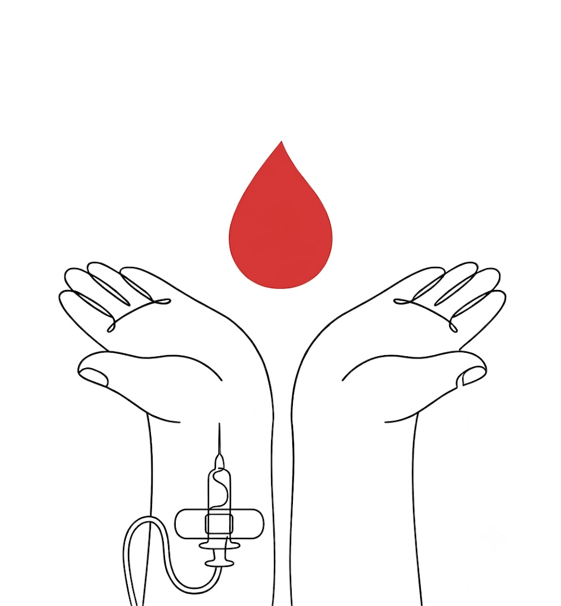
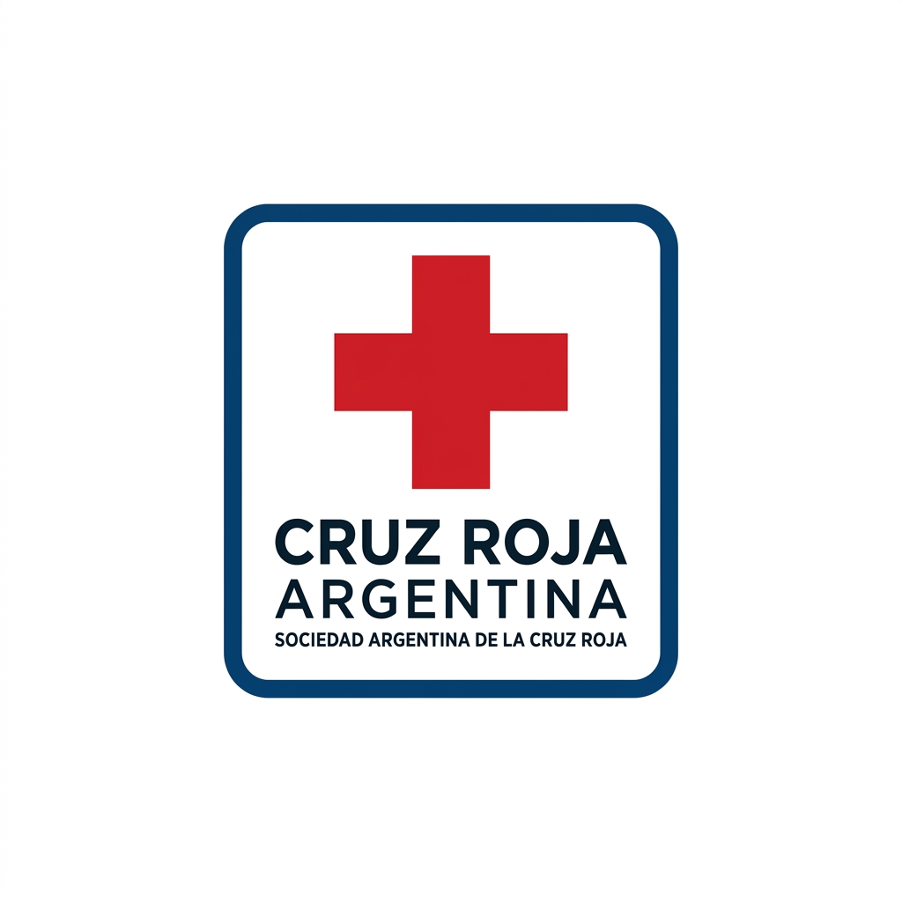
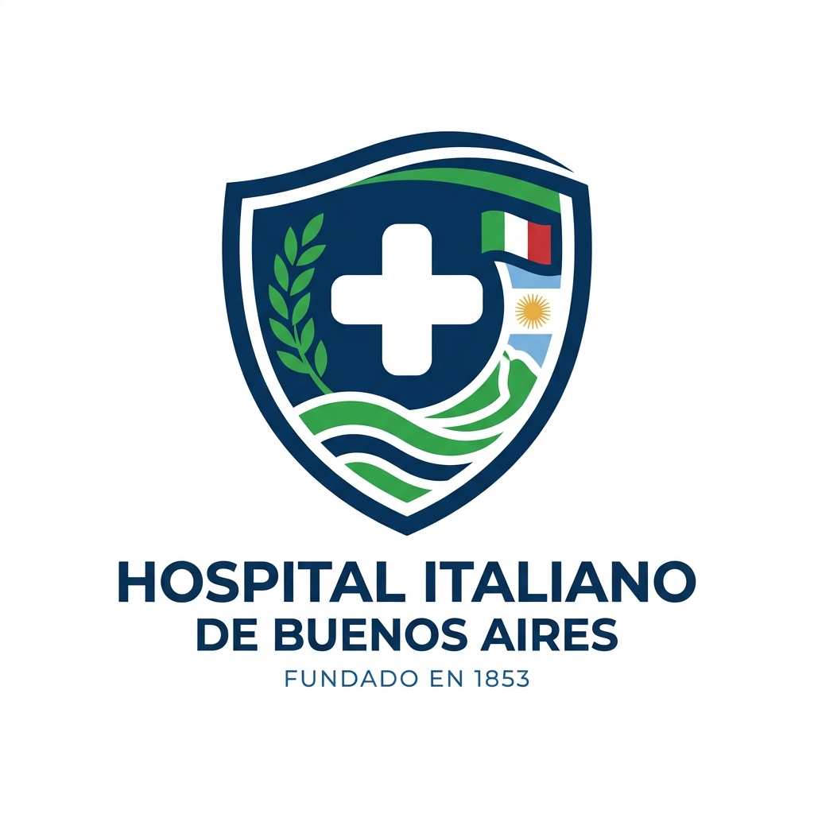
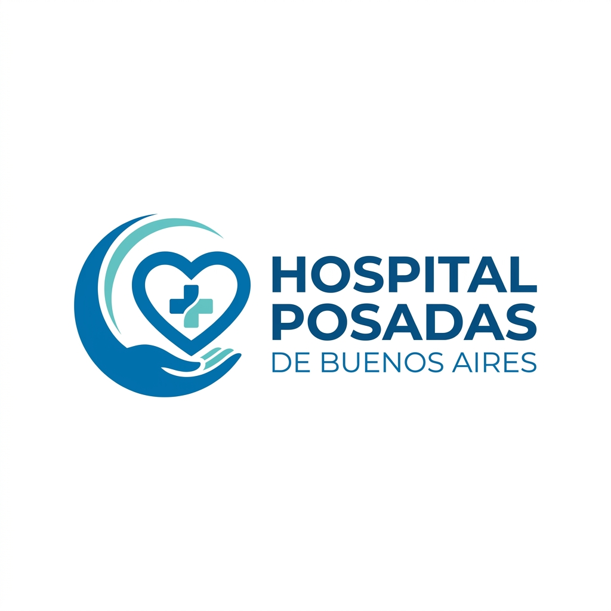

Campaña Hospital de Clínicas
Se solicita de manera urgente sangre tipo O- y A- para cirugías complejas programadas durante esta semana. Tu ayuda es decisiva.
ReservarGoti conecta a donantes solidarios con la demanda urgente de hospitales y centros médicos en todo Buenos Aires.

Asegúrate de cumplir con estos puntos fundamentales antes de reservar tu turno.
Jóvenes de 16 y 17 años pueden hacerlo con autorización de sus padres o tutores.
Garantiza una extracción totalmente segura para el volumen corporal del donante.
Sin síntomas de fiebre, gripe o afecciones respiratorias en los últimos 14 días.
Conoce las necesidades prioritarias en centros hospitalarios de Buenos Aires.
Se solicita de manera urgente sangre tipo O- y A- para cirugías complejas programadas durante esta semana. Tu ayuda es decisiva.
Reservar
Colecta pediátrica continua para tratamientos oncológicos. Donantes frecuentes requeridos.

Jornada especial de extracción sanguínea. Atención rápida con desayuno incluido.
Llevamos el centro de donación más cerca tuyo. Consulta nuestro cronograma móvil.


Todo lo que necesitas saber antes y después de realizar tu donación.


